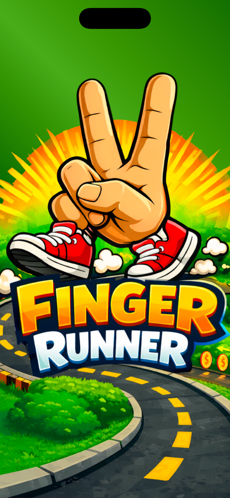

About the Game
Finger Runner is a fast-paced reflex game where your fingers become runners. Dodge obstacles, react quickly, and test your reflexes across exciting tracks. The faster you react, the higher your score!
Game Center
Finger Runner supports Apple Game Center. Compete with friends and players worldwide through leaderboards and achievements. Challenge yourself to reach the top of the rankings.
Game Screenshots



FAQ
How do I play Finger Runner?
Tap and control your runner to avoid obstacles and keep moving forward.
Does the game support Game Center?
Yes. You can compete with friends using leaderboards and achievements.
Are there in-app purchases?
Yes. Players can purchase special shoes to customize their runner.
Does the game work offline?
Yes. Most gameplay features work offline.